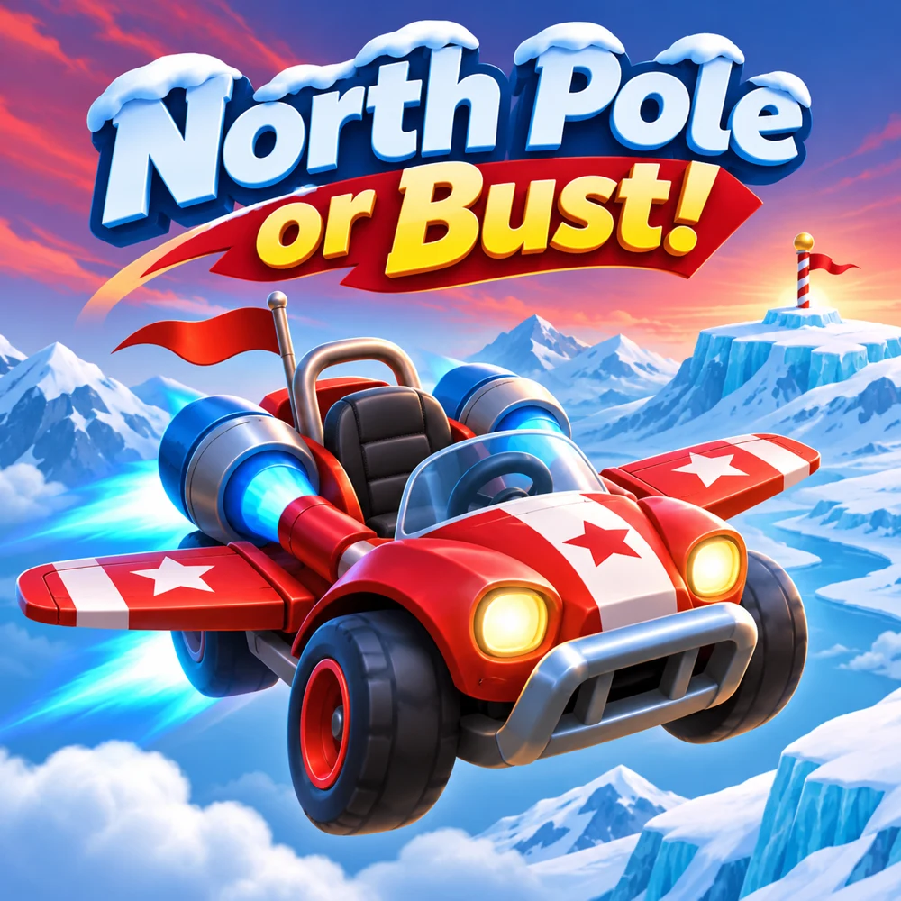

In development · iPhone
North Pole or Bust!
Build a flying kart, earn Scrap and venture from your back garden to the North Pole — and beyond.
Discover the game →We build playful worlds, satisfying challenges and games worth coming back to. From a homemade flying kart to the glow of a midnight puzzle.
Explore our gamesGet support
In development · iPhone
Build a flying kart, earn Scrap and venture from your back garden to the North Pole — and beyond.
Discover the game →In development
A neon-lit merge puzzle with satisfying combos, changing challenges and a late-night atmosphere.
Discover the game →Questions, feedback or an issue with one of our games? Get in touch with our studio.
Visit support